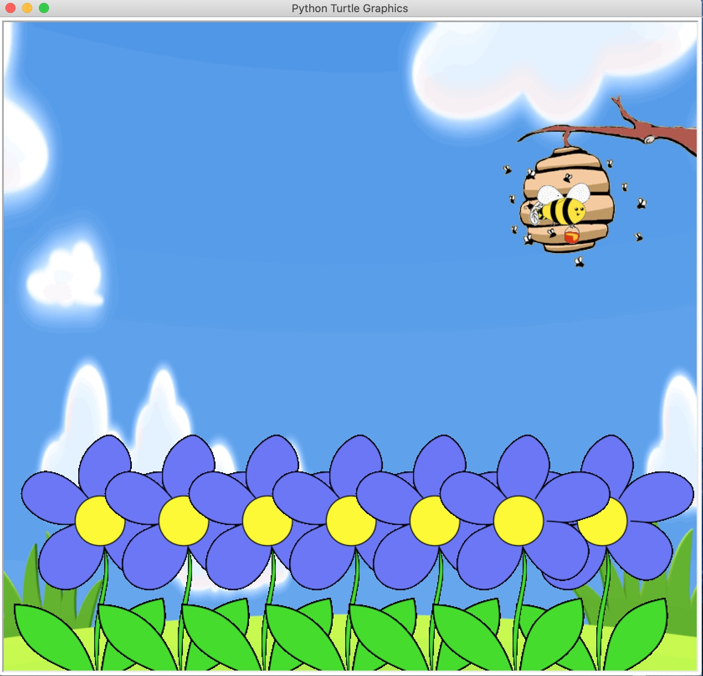
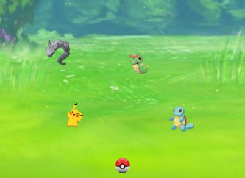

Home
Portfolio
About Me
This is Ethan's Portfolio Page!
Busy Bee

In this project, we culminated all the knowledge we learned throughout the unit 1.1. Our project displays a scene that consists of multiple flowers, a bee, and a beehive. We created these components by finding images online and creating them into GIFs in order to import them into Python Turtle. The flower was created using a for loop in order to shorten the process of importing and positioning six different flowers. In order to get the bee to move we used a while loop that will repeat six times. This allows the bee to fly from the hive, down to all the flowers, and collect the honey to then bring back up to the hive.
Pokemon Game

In this project we used our knowledge from the previous games found in 1.2. Our group decided to make an interesting spin on a typical "shooting game". We modifyed pseudo code found in base models, and changed/edited it to work in our concept. After tweaking the psuedo code we found and edited images so the pokemon could be different sizes. The last step was to debug everything and fix small kinks in the program, so everything could run smoothly.
Dino Game

Our group wanted to do something that no group has done before. We wanted to come up with a game that was universaly recognized by our peers, but one that was not done by any other group thus far. We eventually decided on the dino game from google, and we deemed it a challenge knowing how hard it was going to be to correctly code the collision properties with the cacti.
Santa Scratch Game

https://scratch.mit.edu/projects/462620457/
In this project our group wanted to create a storyline that was easy to follow and play. We decided to go christmas themed, thus why we incorperated santa, presents, and the grinch. The idea of the game was to allow the player to choose whether they wanted to save christmas, or if they wanted to let the Grinch ruin it. We added features that allowed for multiple endings which corresponds to the route that the player wanted to choose.